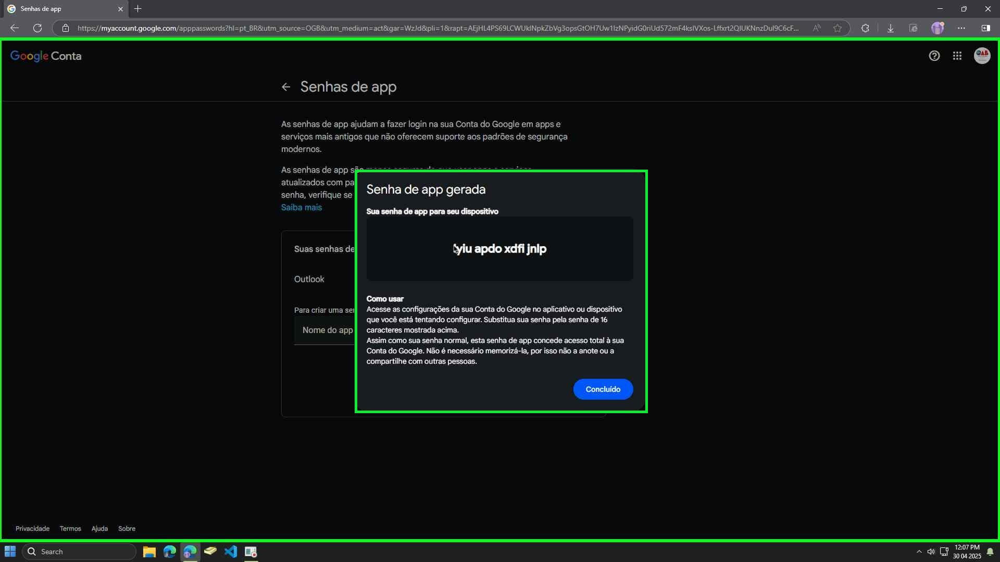

üè† Pagina Inicial
Este tutorial mostra como adicionar sua conta Google no Outlook 2016 ou mais recente, usando autenticação moderna (OAuth 2.0), que é o método recomendado e mais seguro.
Recomendamos fazer backup. A OAB-SC não se responsabiliza por e-mails perdidos ou faltantes. Caso esteja inseguro para realizar as configurações, o auxílio de um profissional técnico é aconselhável.
Passo 1: Se você já tem o Outlook configurado com outra conta:
Abra o Outlook normalmente. Clique na aba Arquivo no canto superior esquerdo.
Passo 2: Clique em Adicionar Conta.
Passo 3: Se é a primeira vez que está abrindo o Outlook, o assistente de configuração será exibido automaticamente. Pule para o passo 4.

Passo 4: Digite seu endereço de e-mail da OAB-SC completo do Gmail (ex: advogado1234@oab-sc.org.br).
Passo 5: Selecione Exibir opções avançadas. Marque a caixa “configurar a conta manualmente”. Em seguida, pressione o botão Conectar.
Passo 6: Selecione o ícone do Google. Uma janela de login do Google aparecerá (pode ser dentro do Outlook ou abrir seu navegador padrão).
Passo 7: Confirme seu endereço de e-mail e clique em Avançar.
Passo 8: Digite a senha da sua conta Google e clique em Avançar. Se você usa verificação em duas etapas, será necessário aprovar no celular ou inserir um código.
Passo 9: O Google solicitará permissão para o Microsoft Outlook acessar sua conta. Role para baixo se necessário e clique em Permitir.
Passo 10: Confirmação visual da autorização.
Passo 11: Após conceder a permissão, o Outlook exibirá a conta adicionada com sucesso. Clique em Concluído para abrir seus e-mails.
Use este tutorial para gerar uma senha específica para o Outlook 2013 ou anterior, necessária após o Google desativar o login menos seguro.
1. Acesse sua Conta Google: https://myaccount.google.com/
2. No menu à esquerda, clique em 'Segurança'.
3. Role a página até a seção 'Como fazer login no Google'. Clique em 'Verificação em duas etapas'. Siga as instruções para ativá-la, caso ainda não esteja ativa. Este passo é obrigatório para criar senhas de app.
4. Após ativar a verificação em duas etapas, volte para a página 'Segurança'. Na seção 'Como fazer login no Google', procure e clique em 'Senhas de app'. (Se não encontrar, pode estar dentro de 'Verificação em duas etapas').
5. Você pode precisar digitar a senha da sua conta Google novamente.
6. Na tela 'Senhas de app', clique em 'Selecionar app' e escolha 'E-mail'. Em 'Selecionar dispositivo', escolha 'Computador Windows' (ou digite um nome personalizado como "Outlook Antigo"). Clique no botão 'Gerar'.
7. Uma janela aparecerá com a senha de app gerada (16 letras amarelas, sem espaços). Copie esta senha imediatamente. Ela não será exibida novamente.
8. Abra o Outlook (2013 ou inferior). Quando ele solicitar a senha da sua conta Google (Gmail), cole a senha de app de 16 letras que você acabou de gerar no campo de senha, em vez da sua senha normal do Google. Marque a opção para salvar a senha, se disponível.
9. O Outlook deve agora conectar-se à sua conta Gmail com sucesso.